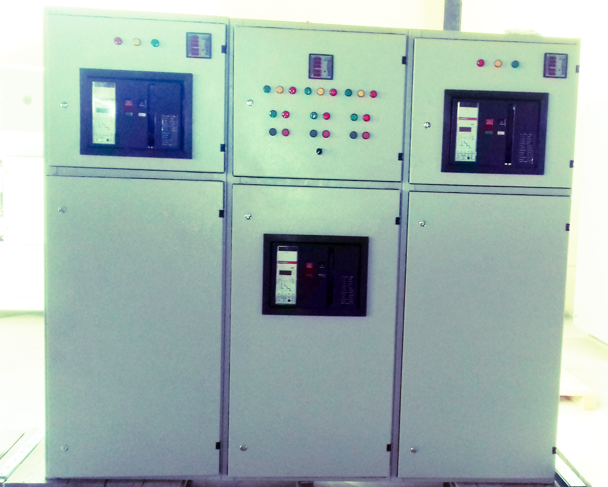

<div id="back">
  <div>
    <header>
      <h1 style="color:#0b5ed7; margin-top: 100px;">
        Auto Transfer Switch Panels (ATS):-
      </h1>
      <hr style="color: #0b5ed7  ; height: 2px; width: 50%; margin-left: 100px;"  >
    </header>
    <div  id="sl" >
      <swiper [config]="config">
        <div class="swiper-wrapper">
            <div class="swiper-slide">
              
                </div>
            <div class="swiper-slide">
                   
                </div>
            </div>
             <!-- Add Pagination -->
             <div class="swiper-pagination"></div>
             <!-- Add Arrows  -->
             <div class="swiper-button-next"></div>
            <div class="swiper-button-prev"></div>
        </swiper>
        <div class="container">
          <p>MRZ manufactures ATS panel (1 out of 2 , 2 out of 3,…. ). The enclosure is made of sheet steel,
            is painted with a light grey electrostatic powder painting, the finish coat is grey color.
            it is designed, built and tested according to the IEC 60439-1 standards.‎
            </p>
          </div>
    </div>
  </div>


</div>
